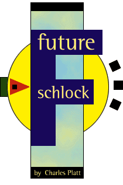

Friday afternoon
I'm sitting in the San Antonio Hilton, wondering what the hell I will say to the local mayor when he comes here tonight to meet 11 so-called futurists, one of them being me. "Futurist" is a label that any Net journalist may find himself wearing once in a while, and usually it entails nothing more strenuous than making vague predictions for an hour or so in front of an audience at a trade show. This gig is very different: I'm being paid to spend a long weekend helping to develop workable concepts for a "virtual world's fair" to be held in San Antonio as a tourist attraction in 2001.
A virtual world's fair? What can this possibly mean? If it's virtual, how can it be located somewhere, and how can it attract tourists? If we run a bunch of T3s into the local convention center and dump 10,000 terminals on white-clothed tables with pleated skirts around the edges, will this tempt vacationers to cancel their plans to visit Vegas?
It all seems hopelessly impractical, probably because the "virtual" buzz word was imposed by organizers who want to seem cutting-edge without understanding what virtuality is all about. In fact, when I received my e-mailed invitation to the planning weekend I assumed that this was just another half-baked attempt to exploit the Net by a small group of opportunists who would fade back into obscurity as soon as their money ran out, and my only question was whether their bank account would stay open long enough for my honorarium check to clear.
But now that I'm actually here in San Antonio, I find that the fair is being taken extremely seriously. The local newspaper has given it front-page coverage in its Sunday edition, many businesses have pledged their support, our two-day planning session alone will cost $150,000, and US West is picking up the tab. San Antonio may sound provincial, but it's the ninth largest city in the United States, and people here want a fair to reignite their sputtering economy--the same way it happened when they hosted a traditional-style world's fair back in 1968. Two of its quaintly modernistic structures are visible from my hotel window: a rotunda like a Jell-O mold, and a skinny concrete observation tower with a circular restaurant on top.
Tonight we futurists will be welcomed by the mayor, and then we will have a mere 24 hours to develop workable concepts that we must present at 5 p.m. tomorrow to a large audience of local notables. This makes me very nervous indeed, because everyone's expectations seem wildly unrealistic, and when people expect a lot, they are liable to get pissed when things don't work out. And the more I think about it, the more convinced I am that things will not work out because this will be a wacky idea no matter what we try to do with it, and it certainly isn't going to make money.
Friday evening
The mayor, William E. Thornton, comes across as a real nice guy who cares about his community. He poses for photographs, hands out his business card, offers some platitudes about the information age, then runs off to another civic function, leaving the futurists to start work.
Our team leader is Arnold Wasserman, formerly vice president of design for NCR and Xerox, currently heading the Innovation Strategy Division of IDEO, a multimedia and interface design company. He explains that the fair should be a cross-cultural event encompassing "the Americas," because San Antonio's population is 51 percent Hispanic and the city prides itself on racial harmony. With this in mind, four of the futurists have been invited from locations south of the border. (None from Canada, presumably because it's so far from Texas, it doesn't count.)
A woman mathematician who specializes in Boolean logic at a university in Mexico stands up and advocates a "virtual window" on art treasures in her homeland. The vice president of a company in Panama hopes that the fair can catalyze growth of communications infrastructure in Latin countries. A physicist and director of an institute for advanced study in Chile sounds a more profound note, telling us that we need a theme "important enough to die for."
Wasserman likes this last statement a lot. He isn't very interested in practical issues and prefers to talk about values and vision. A theme important enough to die for! Surely, if we can come up with that, the logistics will take care of themselves. Well, maybe so, but I'm a skeptic by nature, I think more like an engineer than a philosopher, and I want to know how things are going to work. Consequently, when I return to my room at 10 p.m., I spend an hour trying to formulate ideas that satisfy my expectations. Three come to mind:
Telerobotics. In San Antonio, we could have a robot arm fitted with a lifelike jointed hand, mimicking the motions of a data glove in Argentina or Peru. We would also have a duplicate robot arm in the remote location, and a duplicate data glove here. Now "handshaking protocol" takes on a whole new meaning as visitors have the real-time experience of clasping the palm of some unknown foreigner, creating the perfect metaphor for (you guessed it) international goodwill.
Multinational folk-music database. Since most folk music tends to fall somewhere between tiresome and excruciating, let's forget the usual model of virtuosos dressing up in silly clothes and subjecting an audience to interminable recitals on primitive stringed instruments. Let's put folk music back into the hands of the folk, no matter how untalented they happen to be, and give the audience veto power. Anyone should be able to upload a minute or two of music to the fair's Web site, along with a self-photo and perhaps an appropriately solemn statement of purpose and belief. Fair visitors can then audition these multinational samples, keeping one finger on the fast-forward button. Web browsers will be allowed limited access from outside the fair, thus promoting the event and encouraging people to attend in person.
Face-to-face communication. Patrizio, somewhere in Mexico, says "°Buenas tardes!" Speech recognition software converts his words into plaintext which is auto-translated into English and appears as a subtitle reading "Good afternoon!" beneath his face on a screen in San Antonio. A visitor at the fair speaks a reply that goes back through the translation process, thus initiating an exciting adventure in bilingual audiovisual communication. Here again, offsite Web browsers would be able to eavesdrop in order to promote the fair.
I like this last scenario because it reflects the free spirit of the Net. People should be allowed to say literally anything, including obscene comments or racist epithets, if that's what they want. This would provide a welcome break from the typical world's fair vision of blissed-out global harmony which downgrades individuals to the status of undifferentiated drones humming along in unison. The Net has already shown us something much healthier: a diverse assortment of spirited people who clash freely and enjoy the experience. I'm not sure if this is a theme worth dying for, but it seems worthwhile to me.
Saturday
Under Wasserman's benevolent, nurturing guidance, we spew out more than 60 ideas, which he summarizes using a felt-tip marker on poster-sized sheets that are taped to the walls of our hotel meeting room. This makes everyone feel good because it creates the impression that our thoughts are important and we're doing a lot of work.
Then we split into smaller groups to develop full-fledged scenarios, and no one even glances at the sheets on the wall anymore.
We all agree that there has to be a compromise: to satisfy the material needs of San Antonio, this fair cannot be entirely virtual. It will have to be a theme park with virtual add-ons. I propose a 20-acre site shaped like the North and South American continents, with scaled replicas of key features and live video links to actual countries where locals can participate in the auto-translated online chat.
Other suggestions include wiring each attendee with a cellular phone; building a giant glass prism to serve as an architectural centerpiece (which every world's fair seems to need); giving attendees global positioning devices so they always know where they are; and using robot rovers or humans toting video cameras to transmit random scenes of everyday life from other countries to screens at the fair, so that we can all be virtual tourists. There's also a lot of talk about biculturalism, education and the arts.
At 5 p.m. we make our presentations to San Antonio dignitaries, and to my astonishment and relief, they're enthusiastic. I guess they figure that whatever we do, it can't hurt their economy, and they'll acquire some nifty high-speed data links and a load of computer equipment that can be moved into local schools after the fair ends.
I find my skepticism wavering. I like the idea of spontaneous video chats, glimpses of life in other lands, and people learning about each other without guidance or censorship.
Maybe this turkey can fly after all.
Sunday morning
We finalize our proposals, refining the ideas and adding new ones, such as a system of advance reservations that will eliminate the need to wait in line for exhibits or rides. Cell phones and global positioning devices would be impractical, but people can be loaned pagers that will remind them when to turn up for their reserved seats and will also allow parents to locate their kids at any time.
Visitors in search of romance can register with an intranet dating service that will enable instant meetings inside the fairgrounds. We can offer worldwide searches for previous fair visitors who share special interests. Schools can sponsor pre-fair get- acquainted cross-cultural hookups with kids in other countries.
Will it happen? At lunch I notice the architect of the 1968 observation tower huddling with two principals from Economics Research Associates, a consultancy company that has provided business advice for more than a dozen fairs around the globe. They're discussing admission fees, which sounds pretty serious to me.
Sunday evening
Alas, when I get on the plane out of San Antonio, the optimism wears off. I now believe that we've been fooling ourselves, because the instant we moved this concept partially out of cyberspace it incurred a huge need for investment in buildings and hardware. This can only be financed by civic and corporate sponsors, which means that dozens or hundreds of committees and bureaucrats will want to do what they always do: minimize risk. Almost certainly this will mean reining in creativity and designing a safe, bland, sanitized family event.
It's easy to see how fair planners will react when they understand the implications of online chat. Like America Online or the government of Singapore, they'll want filtering software to block obscene speech and racial slurs, and maybe some decency patrols to interrupt any video transmission containing nudity. Even random scenes from other cultures will be censored, because world's fairs always present a dishonestly positive view of participating nations. Peru, for instance, will be depicted as a land of mystery where Inca temples lurk amid exotic rain forests. There'll be no mention of forests being decimated, cities choked with slums caused by uncontrolled population growth (sanctioned by the Catholic church), and political dissidents being jailed by the government.
Likewise, in the United States, we won't be allowed to view inner-city neighborhoods with liquor stores being robbed, addicts shooting up and hookers servicing customers in parked cars. There'll be no hint of gunship diplomacy, huge arsenals of nuclear and biological weapons, and vets suffering Gulf War Syndrome. And we certainly won't see our elected representatives awarding themselves pay raises, launching filibusters and passing amendments to benefit special interest groups that have made substantial campaign contributions.
Controversial topics such as these are commonly aired online, where technology has given every citizen an equal voice and free speech means exactly what it says. But the typical world's fair is a paternalistic vent feeding platitudes to a passive audience, and I see no reason why San Antonio should stray very far from this paradigm.
Consequently, as the fair moves through its planning stages, I expect the "virtual" content to be pared down. This may be a wise business decision because high-tech gimmicks are not just risky, but expensive. On the other hand, devirtualizing the fair will remove its unique selling point, which will create a need for a substitute theme. I have given this a lot of thought, and with all due modesty, I now offer a proposal.
When the previous San Antonio fair was being planned back in the mid-1960s, I'm told that the organizers tried to come up with a centerpiece to attract global attention. Someone suggested a classically Texan exhibit which would simply be the world's largest heap of gold. A truly massive display of coins, jewelry, and ingots would surely lure admirers from around the globe, just as the Crown Jewels are a perpetual tourist magnet at Britain's Tower of London.
The 1968 fair never used this concept, but I believe the time is now right. A heap-o'-gold exhibit certainly isn't very virtual; in fact, it's about as nonvirtual as you can get. But a massive display of bullion actually would satisfy the most exalted, visionary ideal that we talked about: For many people, it would be something important enough to die for.
As for those nerdier, less materialistic folk who would have been more interested in remote sensing and video chat--well, those options should be available on our own computers by 2001. The idea of moving one's physical body to a distant location in order to see and learn has already become blessedly obsolete. In 2001, even more than today, virtuality will begin--and end--at home.